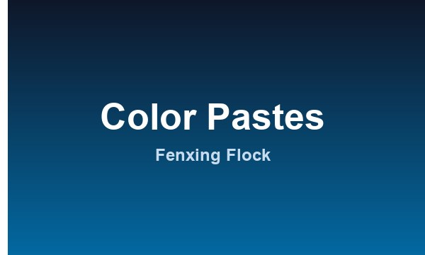

Color is the first thing your buyer sees — and the first thing they'll complain about if it's off. Whether you color the fiber itself or tint the adhesive, the color paste you choose determines how vivid, consistent, and durable that color stays. This guide explains the types of flocking color paste, the parameters that matter, and how to dose and match them correctly.

What a Color Paste Does in Flocking
In flocking, color is introduced two ways: by dyeing the flock fiber itself, or by tinting the adhesive that holds the fibers down. Color pastes are concentrated dispersions of pigment (or dye) in a liquid carrier, designed to be dosed into a system at a small percentage to reach the target shade. They must be compatible with the adhesive or resin and stable enough to survive the curing step and the end-use environment.
Color Paste Types at a Glance
| Type | Best For | Key Traits |
|---|---|---|
| Water-based paste | Water-based adhesives, textiles, eco-friendly lines | Low VOC, easy cleanup, gentle on substrates |
| Solvent-based paste | Solvent-based PU/acrylic, plastics, metal | Stronger penetration, faster cure, higher VOC |
| Pigment paste | Most opaque, lightfast applications | Excellent light fastness, good hiding power |
| Dye-based concentrate | Transparent, vibrant shades on light fibers | Bright color, but generally weaker light fastness |
Parameters That Matter
When you compare color pastes from different suppliers, check these numbers — they decide whether your color holds up:
| Parameter | What It Tells You |
|---|---|
| Tinting strength | How much paste is needed to hit a target shade — higher strength means lower dosage and cost |
| Fineness / dispersion | Particle size; finer paste blends evenly and avoids specks or streaks |
| Light fastness | Resistance to fading under sunlight or UV — critical for outdoor and automotive use |
| Migration resistance | Whether color bleeds into adjacent materials or through the substrate |
| Compatibility | Whether the paste mixes smoothly with your adhesive/resin without gelling or settling |
| pH value | Must stay in the right range to avoid destabilizing water-based systems |
Dosage and Color Matching
Typical dosage ranges from 1% to 10% of the adhesive or resin weight, depending on the paste's tinting strength and the depth of shade you need. For consistent batches, follow a fixed recipe rather than eye-balling it:
- Start from a master formula — weigh the paste, not the drop count.
- Make a lab-dip first — mix a small sample, cure it, and check the shade under standard lighting (D65) before bulk production.
- Keep a sealed reference swatch — compare every new batch against it to catch drift early.
- Don't over-dose — beyond the recommended range, extra paste can weaken adhesion and waste money.
The Three Kinds of Color Fastness to Check
"Color fastness" isn't one test — it's three, and each matters in a different way:
- Light fastness — how well the color resists fading. Rated on the ISO blue-wool scale (1–8); outdoor and automotive work typically needs 6 or higher.
- Wash fastness — whether the color survives laundering. Key for apparel and home textiles, tested to ISO 105 or AATCC methods.
- Rubbing (crocking) fastness — whether color transfers when rubbed dry or wet. Important for upholstery and anything that touches skin.
How to Choose: By Application
| Your Application | Recommended Color Paste |
|---|---|
| Apparel, home textiles (soft touch) | Water-based pigment paste |
| Automotive interiors (UV exposed) | Solvent-based, high light-fastness paste |
| Plastics, rubber, metal parts | Solvent-based paste matched to the adhesive |
| Eco-friendly / low-VOC lines | Water-based, low-VOC paste |
| Bright, transparent shades on light fiber | Dye-based concentrate (verify light fastness) |
Need a Specific Shade or Help with Dosing?
Send us your target color (Pantone number, a sample swatch, or a photo) and tell us your adhesive system — we'll match a paste and provide the dosage recipe with samples to test. Contact us here.
Frequently Asked Questions
- What's the difference between pigment and dye color paste?
- Pigment paste uses solid particles that sit on the surface and give excellent light fastness and hiding power. Dye-based concentrates dissolve into the medium for brighter, more transparent shades but usually have weaker light fastness.
- How much color paste do I need to add?
- Most pastes are dosed at 1–10% of the adhesive or resin weight. The exact amount depends on tinting strength and target shade — always confirm with a lab-dip before bulk production.
- Why is my color paste separating or settling?
- Settling usually means poor dispersion or an incompatible carrier. Stir thoroughly before use, store in sealed containers away from heat, and confirm the paste is compatible with your specific adhesive system.
- Can you match a Pantone or custom color?
- Yes. Provide a Pantone reference or a physical swatch, and we can formulate a matching paste. Keep in mind the final shade also depends on the fiber base color and adhesive, so we always validate with a sample first.